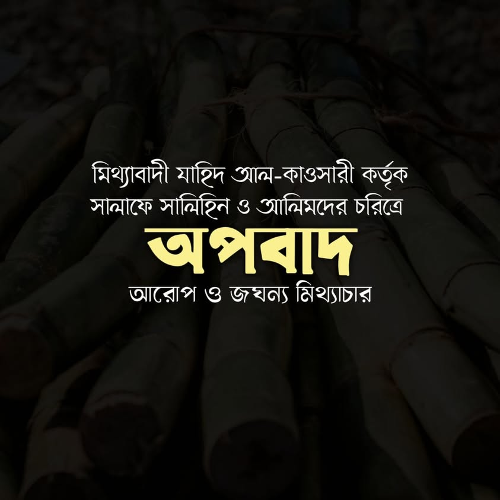

হদ্দে কজফ যদি ৮০ বেত্রাঘাত হয়, তবে তা যাহিদ আল-কাওসারির উপর কেন নয়?
২৩ আগস্ট, ২০২২
হদ্দে কজফ যদি ৮০ বেত্রাঘাত হয়, তবে তা যাহিদ আল-কাওসারির উপর কেন নয়?
সাহাবায়ে কেরাম থেকে উলামায়ে ইসলামের শ্রেষ্ঠ ব্যক্তিবর্গের ব্যাপারে যাহিদ আল-কাওসারি যে জবানদরাজি করেছেন, তা সবার জানা। লোকটার বেয়াদবি ও অভদ্রতা এতোটাই নিম্নমানের যা ভাষায় প্রকাশ করা দুষ্কর। আজ সে বিষয়ে প্রমাণ দেব।
কোনো নিরপরাধ মানুষের উপর যিনার অপবাদ দিলে শরিয়তে তার শাস্তি ৮০ বেত্রাঘাত। আল্লাহর পক্ষ থেকে নির্দিষ্ট। যাহিদ আল-কাওসারি জগদ্বিখ্যাত দুই দুই ইমামের চরিত্রে যিনা ও সমকামিতার মতো জঘন্য অপবাদ লেপেছেন।
★ প্রথমজন-
ইমাম ইবনু হাজার আসকালানি রাহ. (জন্ম-৭৭৩ হি.) যার ব্যাপারে কাওসারির বক্তব্য হলো-
انه لفرط غرامه بالزنا كان يتبع النساء في الشوارع. حتى انه تبع ذات يوم امرأة ظنها جميلة. فلما مدت يدها اليه اذا هي أمة سوداء فرجع عنها.
ইবনু হাজার যিনার প্রতি প্রচুর আসক্তির কারণে রাস্তাঘাটে নারীদের পিছু নিতো। এমনকি একবার এক নারীকে সুন্দর ভেবে তার পিছু নেয়। যখন সে তার দিকে হাত বাড়ায়, তখন দেখল যে এ তো কৃষ্ণবর্ণের এক দাসী। ফলে ইবনু হাজার তাত্থেকে ফিরে এলো। [বয়ানু তালবিসিল মুফতারি- ৫১]
(আল-ইয়াজু বিল্লাহ) ইবনু হাজারের মতো হাদিসের ইমাম যিনায় আসক্ত ছিল? রাস্তাঘাটে নারীদের পিছনে ঘুরত?
যার ব্যাপারে উলামায়ে কেরাম বলেন-
" এ উম্মাহর হেদায়াতের পর মহান আল্লাহর দেয়া সবচে বড় নিয়ামতগুলোর অন্যতম হলেন ইবনু হাজার আল-আসকালানি রাহিমাহুল্লাহ।"
কতবড় কাজ্জাব হলে তাঁর ব্যাপারে এসব কথা রটাতে পারে! এমন অপবাদ ইবলিস শয়তানও তো বিশ্বাস করবে না।
★ দ্বিতীয়জন-
খতিব আবু বকর আল বাগদাদী রাহ. (জন্ম- ৩৯২ হি.) কাজ্জাব যাহিদ আল-কাওসারি খতিবের সমকামিতার অপবাদ আরোপ করতে যেয়ে লেখেন-
لما هرب الخطيب من بغداد عند دخول البساسيري إليها قدم دمشق فصحبه حدث صبيح الوجه كان يختلف إليه، فتكلم الناس فيه وأكثروا حتى بلغ والي المدينة وكان من قبل المصريين شيعياً، فأمر صاحب الشرطة بالقبض على الخطيب وقتله وكان صاحب الشرطة سنياً فهجم عليه فرأى الصبي عنده وهما في خلوة فقال للخطيب قد أمر الوالي بقتلك.
বাগদাদে বাসাসিরি প্রবেশ কালে খতিব বাগদাবি যখন পালিয়ে যান এবং দিমাশকে গিয়ে উঠেন, তখন এক সুশ্রী ছেলে তার সঙ্গী হয়। যে তার কাছে বারবার আসা-যাওয়া করত। এতে মানুষ প্রচুর সমালোচনা শুরু করে। এমনকি তা শহরের গভর্নর পর্যন্ত গড়ায়। গভর্নর শিয়াপন্থী ছিল। সে পুলিশ প্রধানকে খতিব বাগদাদিকে গ্রেফতার ও হত্যার নির্দেশ দেয়। পুলিশপ্রধান ছিল সুন্নী। সে খতিবের উপর হামলা চালিয়ে তাকে এবং ঐ ছেলেকে এক নির্জন স্থানে দেখতে পায়। তখন খতিবকে লক্ষ করে বলল- গভর্নর আপনাকে হত্যার নির্দেশ দিয়েছেন। (তারপর কৌশলে তাকে শহর থেকে বের করে দেয়া হয়) [ তা'নিবুল খতিব, কাওসারি- ২৬]
চিন্তা করুন, কাওসারি কত জঘন্য ও নোংরা বর্ণনা দিয়ে জগদ্বিখ্যাত একজন ইমামের চরিত্রে কলঙ্কের দাগ লেপন করছেন। এখানেই শেষ নয়। কাওসারির বর্ণনা মতে খতিব বাগদাদি অন্য শহরে যাওয়ার পরও সেই ছেলের জন্য প্রবল আসক্তি অনুভব করে এক কবিতা আবৃত্তি করেন-
بات الحبيب وكم له من ليلة * فيها أقام إلى الصباح معانقي.
ثم الصباح أتى ففرق بيننا * ولقلما يصفو السرور لعاشق.
প্রিয়তম আমার রাত কাটিয়েছে, আর কত রাত তার এমন কেটেছে যে, সকাল পর্যন্ত সে আমাকে জড়িয়ে ধরে রেখেছে।
তারপর এক সকাল এসে আমাদের বিচ্ছিন্ন করে দিলো। আর প্রেমিকের ভাগ্যে নির্মল আনন্দ খুব কমই জুটে। [প্রাগুক্ত]
পূর্ণ বক্তব্য পড়ে একজন ভদ্র ও সভ্য সমাজের লোক নাউজুবিল্লাহ পড়তে বাধ্য। لَعْنَةُ اللَّهِ عَلَى الْكَاذبين
কিন্তু যাহিদ আল-কাওসারি মিথ্যা বেসিসের উপর এসব নিষিদ্ধ পল্লীর কার্যকলাপকে আয়েশ করে সভ্য সমাজে বর্ণনা করেছেন। আর একজন ইমামের বদনাম রটানোর অপচেষ্টা চালিয়েছেন। হানাফি মাজহাবের অন্ধ অনুসারী না হওয়াই ছিল যাদের একমাত্র অপরাধ।
নাউজুবিল্লাহ! সুম্মা নাউজুবিল্লাহ!
প্রশ্ন হচ্ছে, এমন নির্জলা মিথ্যাচার ও অপবাদের শাস্তি কি?
মহান আল্লাহ বলেন-
وَالَّذِينَ يَرْمُونَ الْمُحْصَنَاتِ ثُمَّ لَمْ يَأْتُوا بِأَرْبَعَةِ شُهَدَاءَ فَاجْلِدُوهُمْ ثَمَانِينَ جَلْدَةً وَلَا تَقْبَلُوا لَهُمْ شَهَادَةً أَبَدًا وَأُوْلَئِكَ هُمْ الْفَاسِقُونَ.
আর যারা সচ্চরিত্র নারীর প্রতি অপবাদ আরোপ করে, তারপর তারা চারজন সাক্ষী নিয়ে আসে না, তবে তাদেরকে আশিটি বেত্রাঘাত কর এবং তোমরা কখনই তাদের সাক্ষ্য গ্রহণ করো না। আর এরাই হলো ফাসিক।
[সূরা নূর- আয়াত- ৪]
আয়াতে তিনটি বিষয় লক্ষ্যণীয়-
১. (ثَمٰنِيْنَ جَلْدَةً) তাদেরকে আশিটি বেত্রাঘাত করা হবে।
দু'জন ইমামের উপর অপবাদ দেয়ায় (৮০+৮০) ১৬০ টি দুররা মারা ওয়াজিব।
২. (وَّلَا تَقْبَلُوْا لَهُمْ شَهَادَةً أَبَدًا) সর্বকালের জন্য তাদের সাক্ষ্যকে প্রত্যাখ্যান করা হবে, কোন বিষয়েই তাদের সাক্ষ্য গ্রহণযোগ্য হবে না।
৩. (وَأُولٰ۬ئِكَ هُمُ الْفٰسِقُوْنَ)
তারা ফাসিক বা পাপাচারী। তারা খাঁটি মু’মিন নয়। আর তারা দুনিয়া ও আখিরাতে অভিশপ্ত সম্প্রদায়- যা সূরা নূরের ২৩ নং আয়াতে বিবৃত হয়েছে।
কজফ (قذف) বা অপবাদ আরোপ ঐসব অপরাধের অন্তর্ভুক্ত, যার শাস্তি কেউ ক্ষমা করার অধিকার রাখে না। ক্ষমতার দাপটে কাওসারি সাহেব এ দুনিয়া থেকে পার পেলেও আখেরাতে ইমাম ইবনু হাজার ও খতিব বাগদাদি রাহিমাহুমাল্লাহ আল্লাহর আদালতে নিশ্চয়ই এ শাস্তি প্রয়োগের জোর দাবি জানাবেন। আর আল্লাহ ইনসাফকারী। কারও পাওনা বকেয়া রাখেন না তিনি।
